Ad Click Event Aggregation
Facebook/Google scale pe roz 1 billion ad clicks ko har minute aggregate karna — billing-grade accuracy ke saath. Stream processing, event time vs processing time, watermarks, windows, exactly-once aur end-of-day reconciliation — payments wale reconciliation mindset ka big-data version.
Introduction: RTB aur kyun accuracy = paisa
Digital advertising mein real-time bidding (RTB) hoti hai — ad inventory ek second se kam mein kharidi-bechi jaati hai. Clicks ka aggregated data billing (advertiser kitna pay karega) aur targeting decisions dono mein jaata hai. Matlab: 1% galti = crore ka dispute.
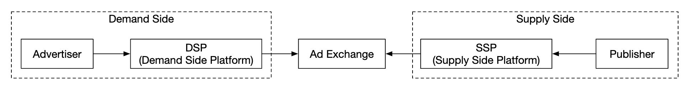
Step 1: Requirements aur scope
- Input: 1B ad clicks/day, 2M ads total, 30% YoY growth.
- Queries: (1) ad X ke last Y minutes ke clicks, (2) last 1 min ke top 100 ads (dono params configurable, aggregation har minute), (3)
ip,user_id,countryse filtering. - Edge cases (candidate ne khud bataye — good signal!): late events, duplicate events, partial failures/recovery.
- Latency: aggregation ke liye few minutes e2e theek hai (billing/reporting). RTB khud <1 sec, lekin woh is system ka scope nahi.
Non-functional
- Correctness sabse upar — billing aur RTB isi pe chalte hain
- Delayed aur duplicate events properly handle
- Robust — partial failures se recover
- Latency: max few minutes
Back-of-the-envelope
| Quantity | Value | Kaise |
|---|---|---|
| DAU | 1B | assumption |
| Clicks/day | 1B | 1 click/user/day |
| Avg QPS | ~10,000 | 10^9 / 10^5 sec |
| Peak QPS | 50,000 | 5× avg |
| Storage/day | 100 GB | 0.1 KB × 1B |
| Storage/month | ~3 TB | 100 GB × 30 |
Step 2: API, data model, high-level design
Query API
GET /v1/ads/{ad_id}/aggregated_count?from=<minute>&to=<minute>&filter=<filter_id>
from : start minute (default now-1min)
to : end minute (default now)
filter : e.g. 001 = "non-US clicks"
-> { "ad_id": "ad001", "count": 125 }
GET /v1/ads/popular_ads?count=100&window=1&filter=<filter_id>
count : top N
window : aggregation window in minutes (M)
-> { "ad_ids": ["ad3","ad1", ...] }Data model — raw vs aggregated
Raw event: [AdClickEvent] ad001, 2021-01-01 00:00:01, user 1, 207.148.22.22, USA
| ad_id | click_timestamp | user | ip | country |
|---|---|---|---|---|
| ad001 | 2021-01-01 00:00:01 | user1 | 207.148.22.22 | USA |
| ad001 | 2021-01-01 00:00:02 | user1 | 207.148.22.22 | USA |
| ad002 | 2021-01-01 00:00:02 | user2 | 209.153.56.11 | USA |
Aggregated (per minute, per filter):
| ad_id | click_minute | filter_id | count |
|---|---|---|---|
| ad001 | 202101010000 | 0012 | 2 |
| ad001 | 202101010000 | 0023 | 3 |
| ad001 | 202101010001 | 0012 | 1 |
| ad001 | 202101010001 | 0023 | 6 |
filter_id table: 0012 → region=US, IP=*, user=*; 0013 → region=*, IP=123.1.2.3, user=*. Top-N ke liye most_clicked_ads(window_size int, update_time_minute timestamp, most_clicked_ads array/JSON).
| Raw data | Aggregated data | |
|---|---|---|
| Pros | Full dataset, filtering aur recalculation possible | Chhota dataset, fast query |
| Cons | Bada storage, slow query | Derived data → info loss |
Decision: dono rakho. Raw = debugging/backfill/reconciliation ka source of truth (cold storage mein), aggregated = fast dashboards.
Database choice
Raw: 10k avg / 50k peak writes, reads rare → write-heavy. RDBMS writes scale karna mushkil; Cassandra (ya InfluxDB) heavy writes natively handle karte hain. S3 + Parquet/ORC/Avro bhi option hai (aaj ke data lakes yahi karte hain). Aggregated: har minute writes + dashboards ke reads → read + write heavy → yahan bhi Cassandra.
High-level design
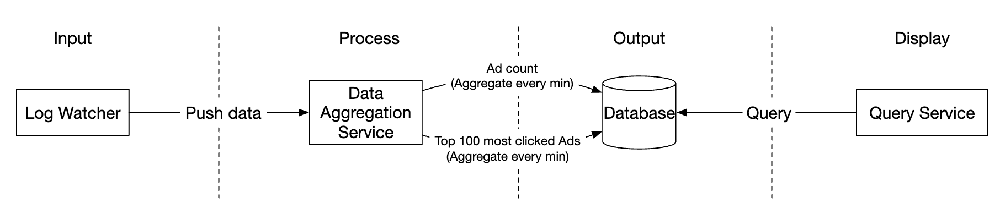
Input aur output dono unbounded streams hain. Sync sink ki jagah Kafka se async decoupling:
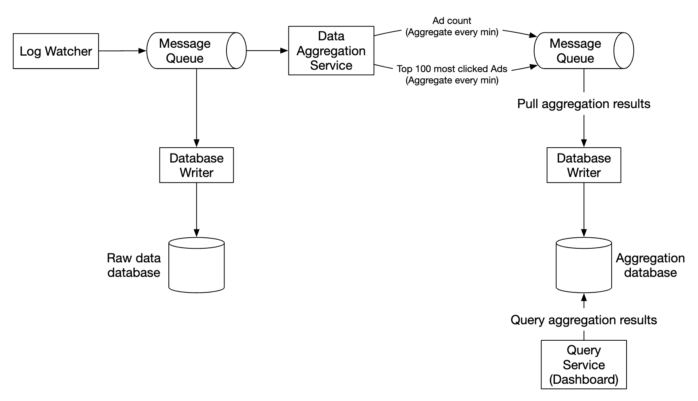
MQ1 schema: ad_id, click_timestamp, user_id, ip, country. MQ2: ad_id, click_minute, count aur update_time_minute, most_clicked_ads.
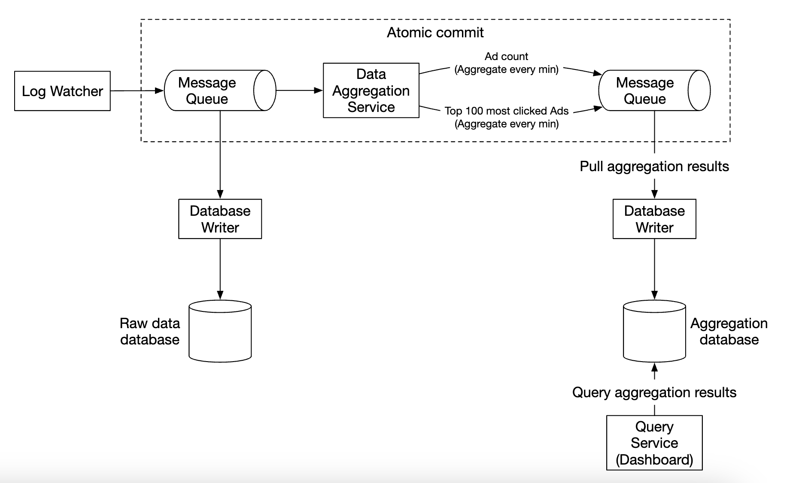
sendOffsetsToTransaction ek hi Kafka transaction mein. Flink mein yahi TwoPhaseCommitSinkFunction/KafkaSink with EXACTLY_ONCE karta hai, checkpoint ke saath transaction commit. Downstream DB writer ko phir bhi idempotent upsert karna chahiye: key = (ad_id, click_minute, filter_id), value overwrite — replay safe.Aggregation service — MapReduce DAG
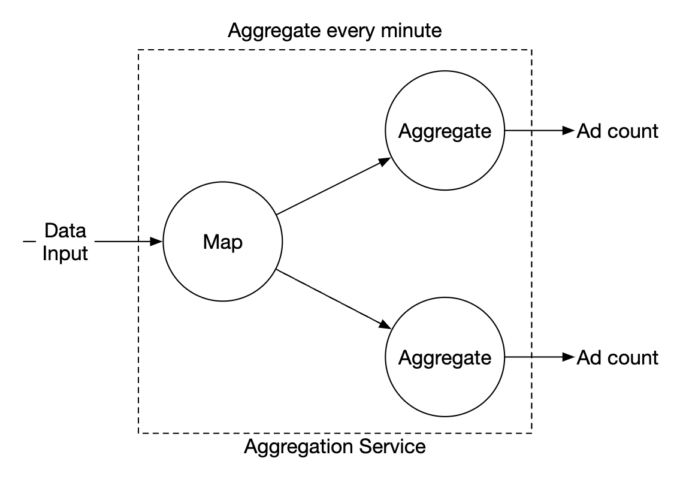
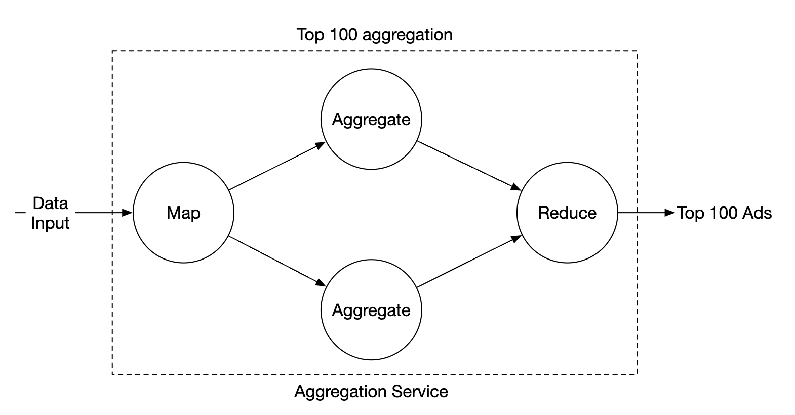
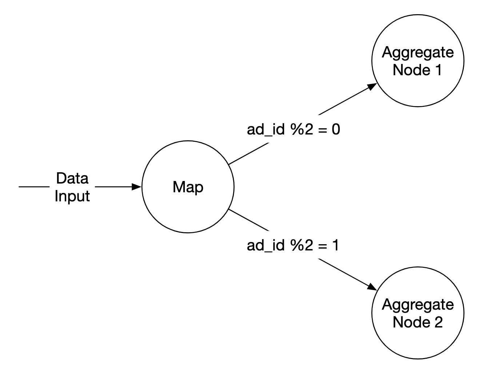
ad_id % 2 = 0 to Aggregate Node 1, ad_id % 2 = 1 to Aggregate Node 2. Same ad ke saare events same node pe — tabhi count sahi hoga.Seedha Kafka partitions se kyun nahi? Kar sakte ho (consumer group), lekin map node data sanitize/transform kar sakta hai, aur agar producer pe control nahi to same ad_id alag partitions mein ho sakta hai — map node re-key karta hai (Kafka Streams ka "repartition topic" yahi hai).
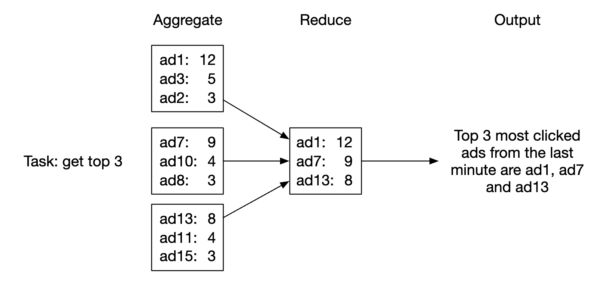
DAG mein intermediate data memory mein, nodes TCP/shared memory se baat karte hain.
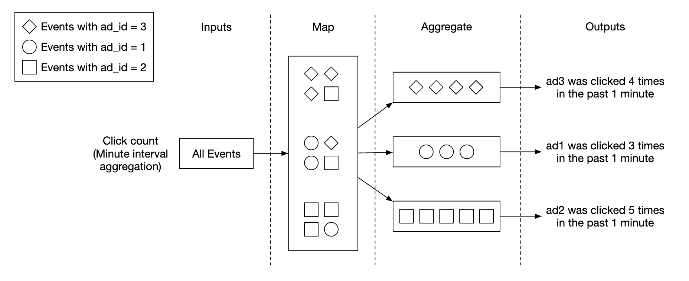
ad_id % 3.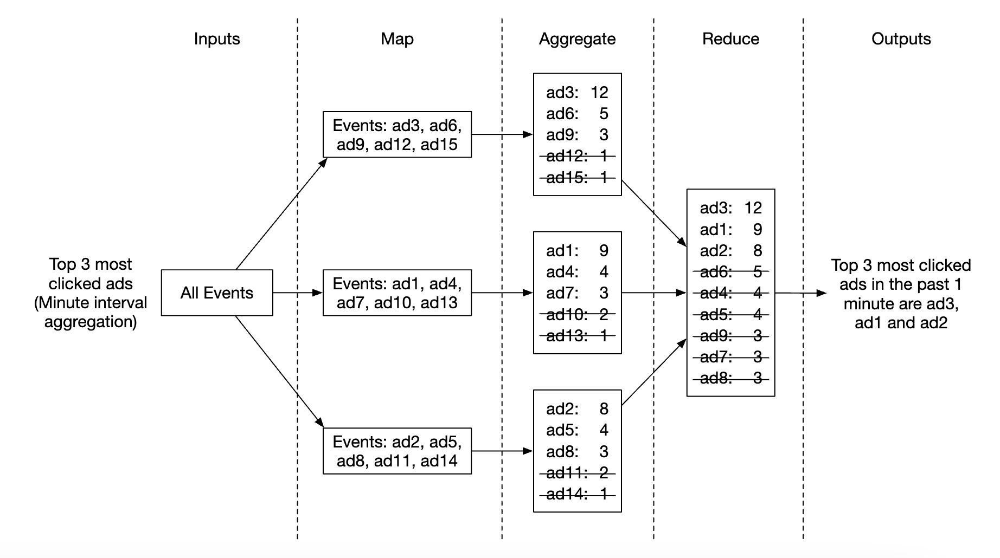
Use case 3: filtering → star schema
| ad_id | click_minute | country | count |
|---|---|---|---|
| ad001 | 202101010001 | USA | 100 |
| ad001 | 202101010001 | GPB | 200 |
| ad001 | 202101010001 | others | 3000 |
| ad002 | 202101010001 | USA | 10 |
| ad002 | 202101010001 | GPB | 25 |
| ad002 | 202101010001 | others | 12 |
Filter fields = dimensions; pre-aggregate per dimension = star schema (data warehouse classic). Simple, existing service reuse, fast reads. Limitation: dimensions badhne pe buckets explode (combinatorial).
Step 3a: Streaming vs batching, Lambda vs Kappa
| Online services | Batch (offline) | Streaming (near real-time) | |
|---|---|---|---|
| Responsiveness | Client ko jaldi response | Response nahi chahiye | Response nahi chahiye |
| Input | User requests | Bounded, bada data | Unbounded (infinite streams) |
| Output | Responses | Materialized views, aggregates | Materialized views, aggregates |
| Measure | Availability, latency | Throughput | Throughput, latency |
| Example | Online shopping | MapReduce | Flink |
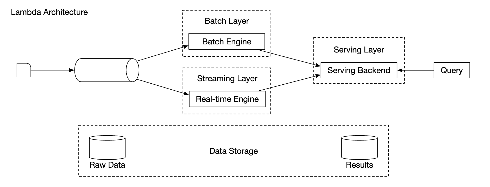
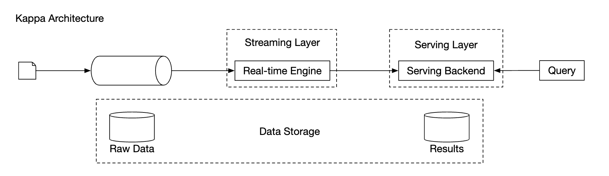
Humara design Kappa hai: historical reprocessing bhi aggregation service se hi.
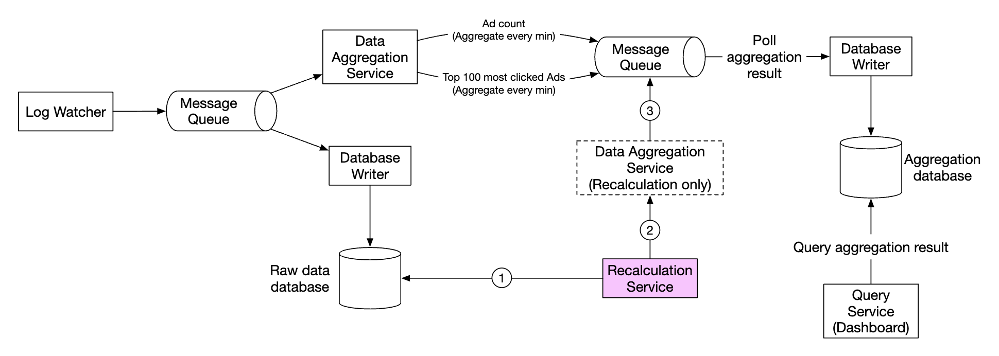
Step 3b: Time — event time vs processing time, watermark
| Pros | Cons | |
|---|---|---|
| Event time | Results zyada accurate | Client ki ghadi galat ho sakti hai / malicious timestamp |
| Processing time | Server timestamp reliable | Late event galat window mein |
Accuracy priority hai → event time. Ab late events ka kya?
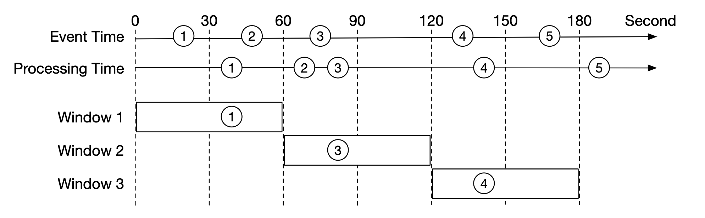
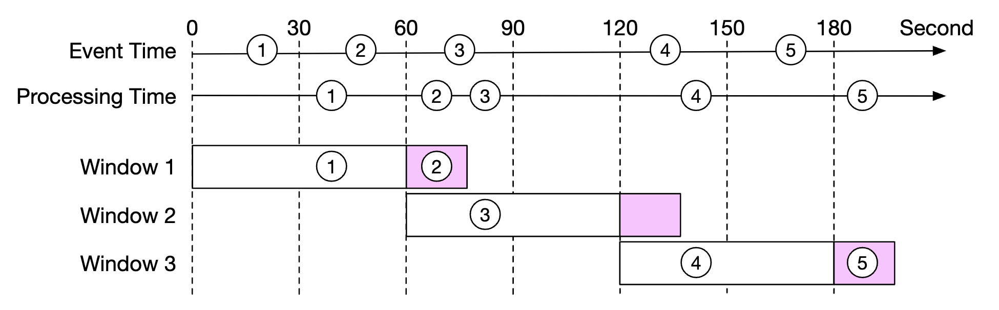
- Chhota watermark → kam latency, zyada missed events
- Lamba watermark → kam missed, zyada latency
- Kuch events phir bhi miss honge — unke liye low-probability optimisation mat karo, end-of-day reconciliation karo.
WatermarkStrategy.forBoundedOutOfOrderness(Duration.ofSeconds(15)) + allowedLateness(...) + sideOutputLateData(tag) — bahut late events side output mein jaate hain jahan unhe correction ke liye store kar sakte ho. Cross-border payments mein bhi same problem: partner bank ka settlement file "value date" (event time) pe hota hai, processing kal hoti hai — isliye reports value date pe aur late items correction run mein.Aggregation windows
Chaar types: tumbling (fixed), hopping, sliding, session.
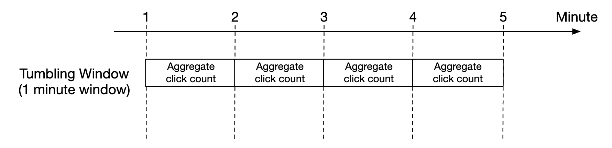
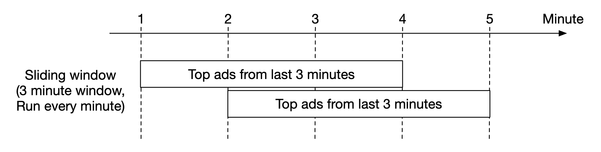
Step 3c: Delivery guarantees aur dedup
Normally at-least-once kaafi hai, lekin yahan "thode percent ka farak = millions of dollars" → exactly-once chahiye.
Duplicates kahan se aate hain: client resend (malicious ho to risk engine ka kaam), ya server outage — aggregation node mid-way gira aur upstream ko ack nahi mila.
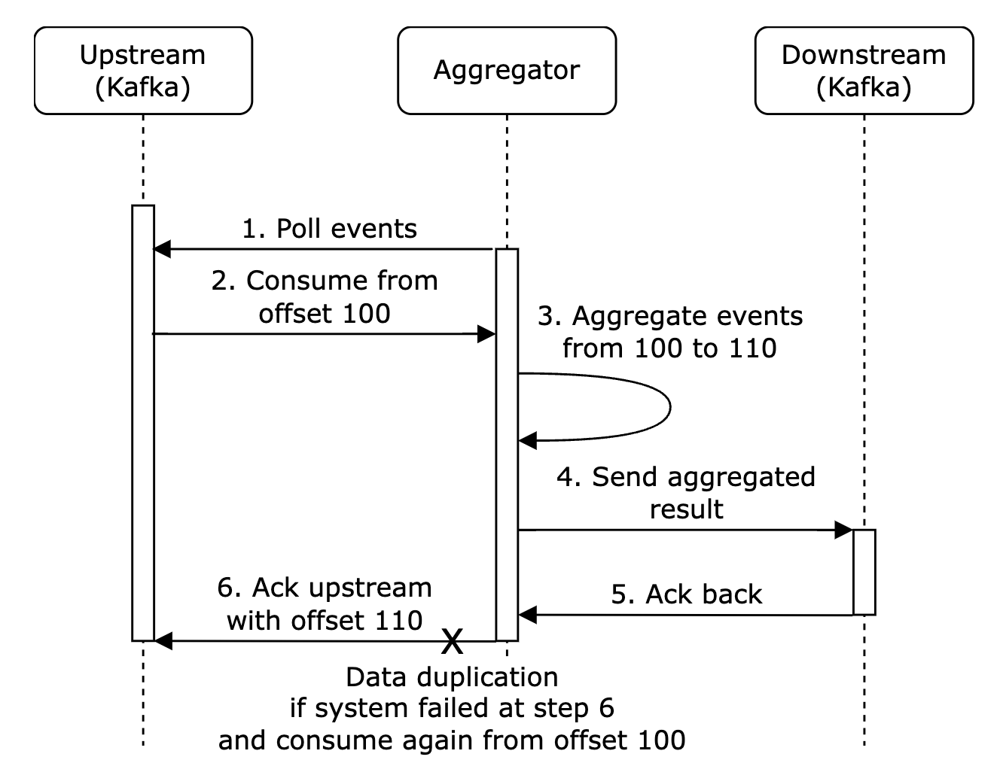
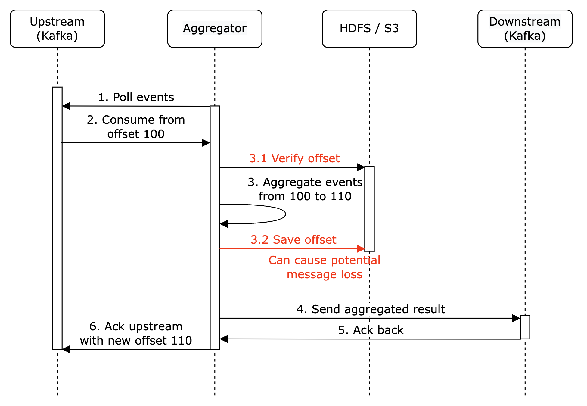
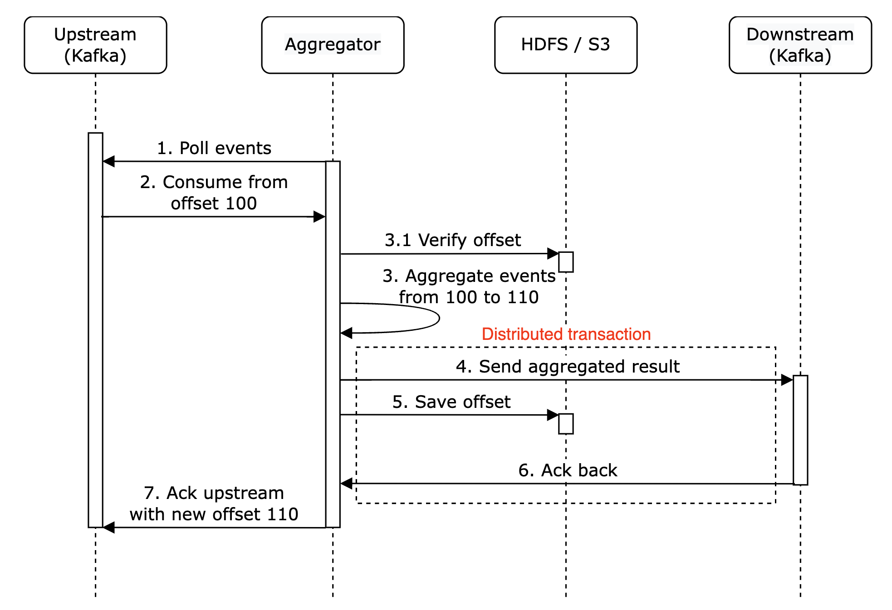
(ad_id, minute) hai aur write = upsert/overwrite — to duplicate result harmless hai. "Make the sink idempotent" almost hamesha 2PC se sasta aur robust hai. Payments mein bhi yahi: idempotency key > distributed transaction.Step 3d: Scaling
Teen decoupled components — MQ, aggregation service, DB — alag-alag scale.
Message queue
- Producers unlimited; consumers consumer group mein add karo.
- Partitions pehle se enough banao (baad mein badhana = ordering/key mapping issue).
- Hazaron consumers ka rebalance slow — off-peak karo.
- Geography se topics:
topic_na,topic_eu…
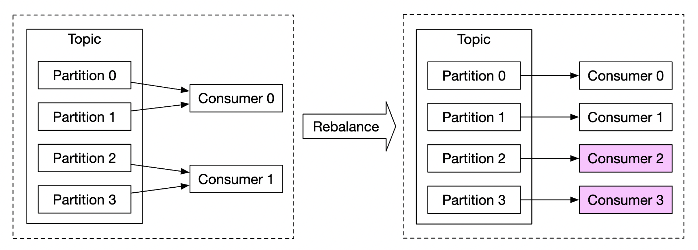
Aggregation service
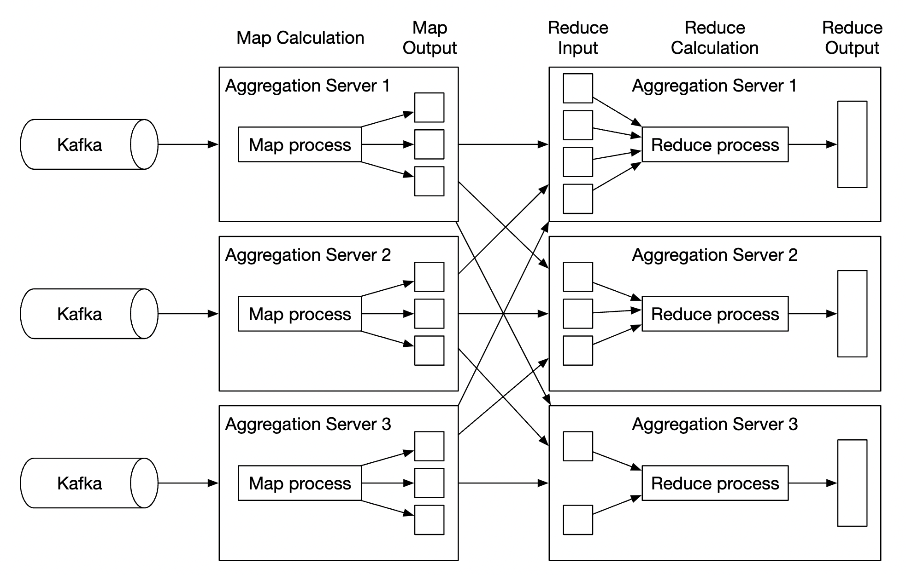
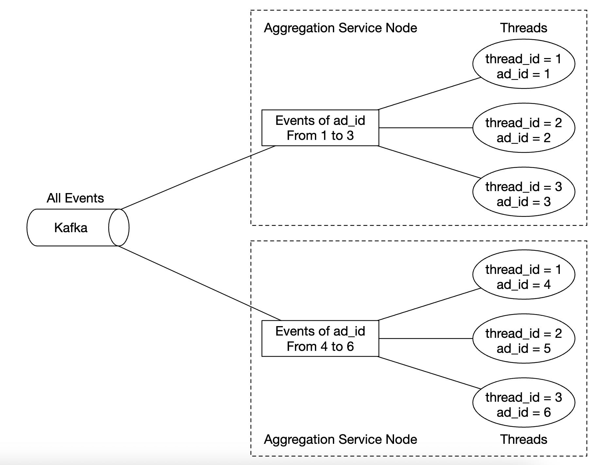
Database
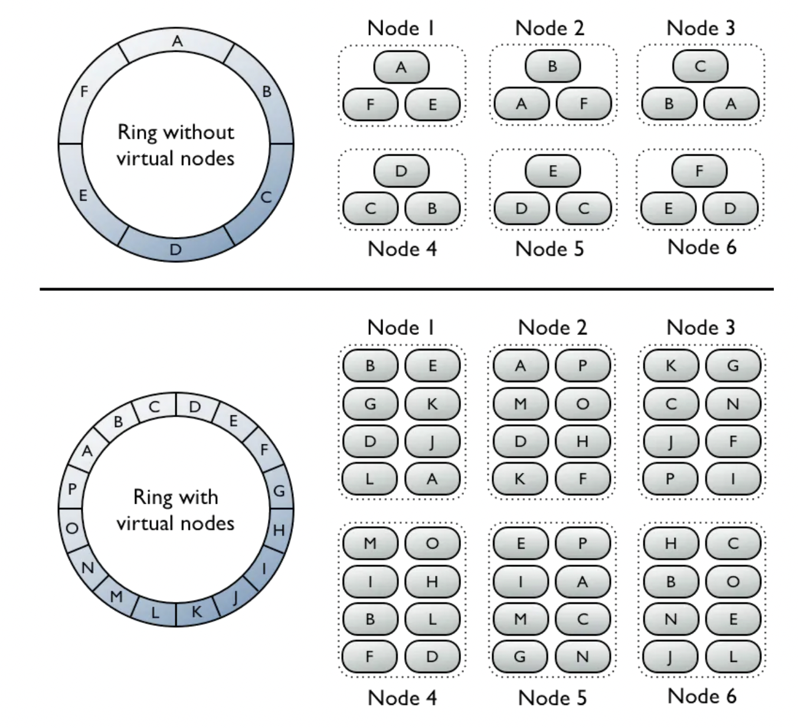
Hotspot
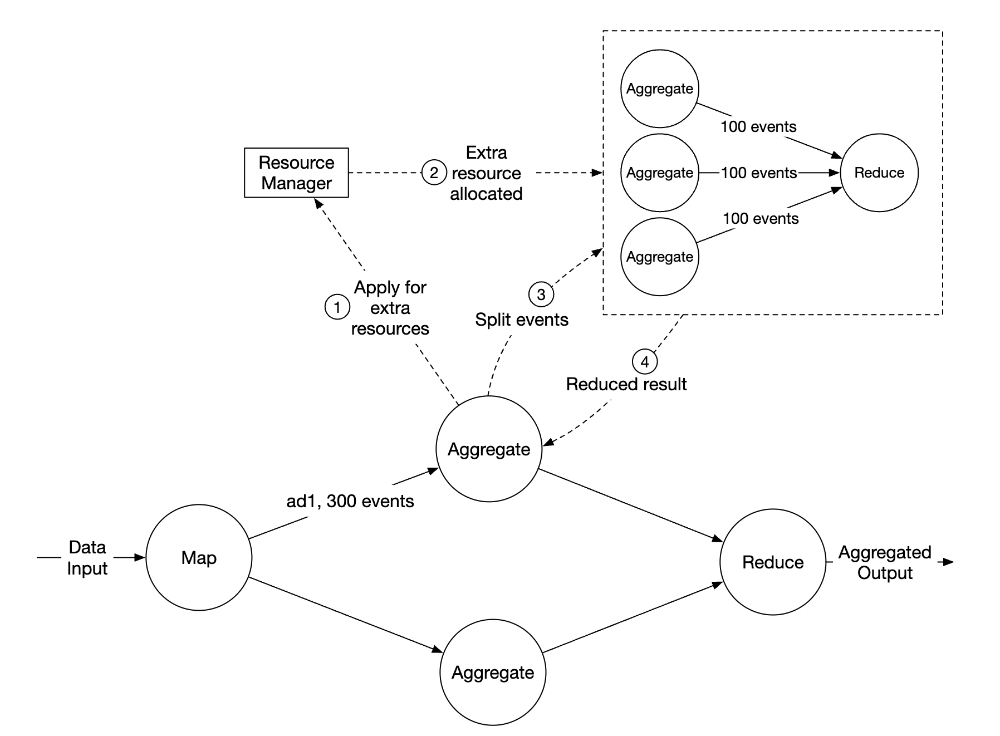
Advanced alternatives: Global-Local aggregation (pehle local pre-aggregate, phir global) aur Split Distinct aggregation — Flink SQL mein dono built-in optimizations hain.
Step 3e: Fault tolerance
Aggregation in-memory hai; node gira to state gaya. Kafka offset se restart possible, lekin top-N in M minutes jaisa intermediate state bhi chahiye → snapshots.
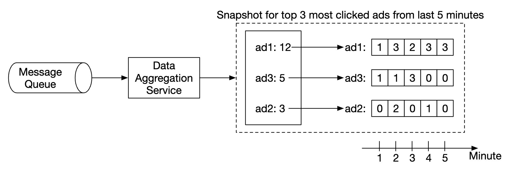
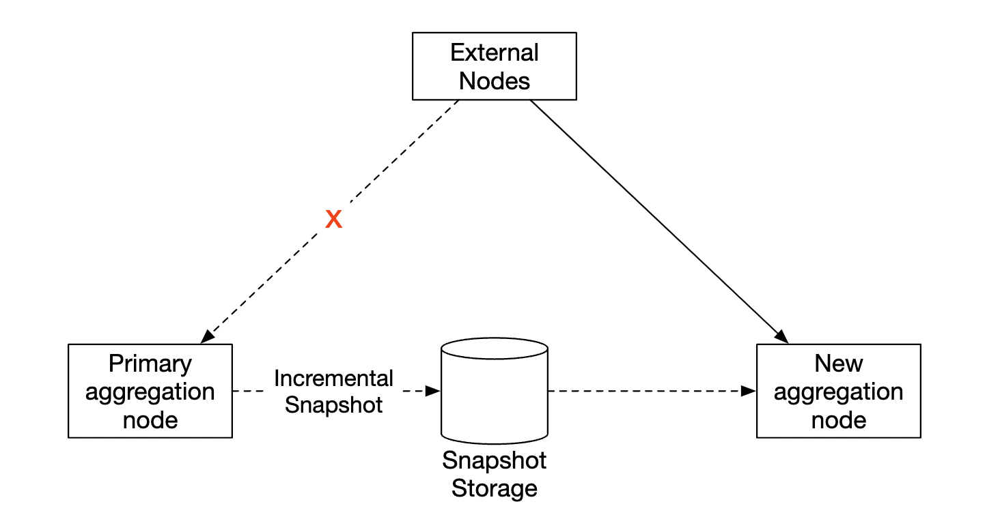
Step 3f: Monitoring aur reconciliation
- Latency: har stage pe timestamps → e2e latency.
- Queue size: Kafka commit log hai, to queue size nahi, records-lag monitor karo.
- Resources: CPU, disk, JVM (GC pauses!).
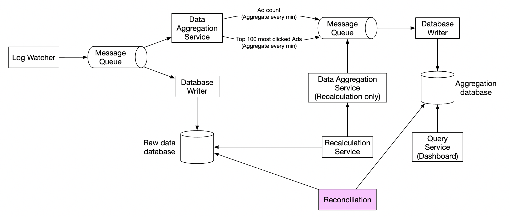
Alternative design (off-the-shelf)
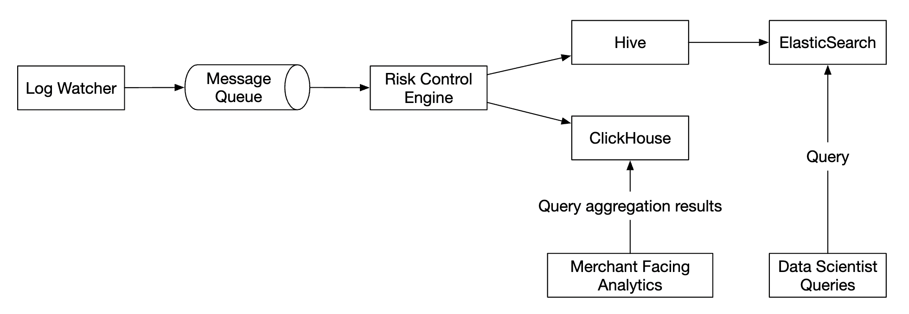
Generalist interview mein tool internals expected nahi; thought process + trade-offs zyada important hain. Practice mein: Hive + Elasticsearch, aur aggregation ke liye ClickHouse/Druid jaise OLAP stores.
Step 4: Wrap up
Cover kiya: data model & API, MapReduce aggregation, MQ/service/DB scaling, hotspot, monitoring, reconciliation, fault tolerance. Kafka, Spark, Flink ka background ho to yeh design bahut natural lagta hai.
- Numbers: 1B/day → 10k QPS avg, 50k peak, 100 GB/day.
- Dono APIs + raw vs aggregated (dono rakhenge — reason: backfill/recon).
- Kafka → aggregation (map/aggregate/reduce) → Kafka → DB. Second queue = atomic commit.
- Deep dive priority: event time + watermark, exactly-once/dedup, reconciliation — yeh teen "billing correctness" ke pillars hain.
- Phir scaling (partitions, hotspot) aur fault tolerance (snapshots).
Follow-up questions
- Q: Click fraud / bot clicks?
- Ingestion pe risk engine (rate per IP/user, device fingerprint); filtered clicks alag store, billing se exclude, lekin audit ke liye retain.
- Q: Top-N exact chahiye ya approximate chalega?
- Billing ke liye counts exact; trending dashboards ke liye Count-Min Sketch / heavy hitters approximate chal sakta hai — memory bahut kam.
- Q: Reconciliation mein mismatch mila to?
- Raw se recompute (Kappa replay), corrected aggregates overwrite with version, billing adjustment generate — kabhi silently edit nahi.
- Q: Kafka partition key kya rakhoge?
ad_id— lekin hot ads ke liye salting (ad_id#n) + two-stage aggregation.
Key Takeaways
- Raw (truth, cold storage) + aggregated (fast) dono store karo.
- Kafka → MapReduce-style DAG → Kafka; second queue end-to-end exactly-once ke liye.
- Event time + watermark; jo phir bhi miss ho, reconciliation pakdega.
- Tumbling window for counts, sliding for top-N; star schema for filters.
- Exactly-once = atomic (offset + output) ya idempotent sink — idempotent sink usually better.
- Kappa architecture: ek engine, replay se recalculation.
- Hotspots: resource manager se split, global-local aggregation.
- Snapshots + offsets = stateful recovery (Flink checkpoints).